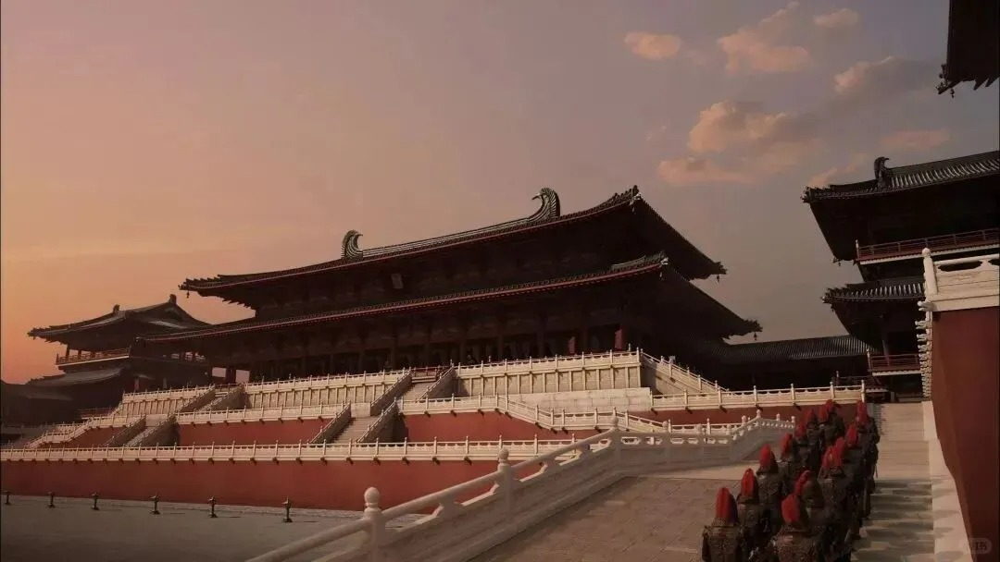
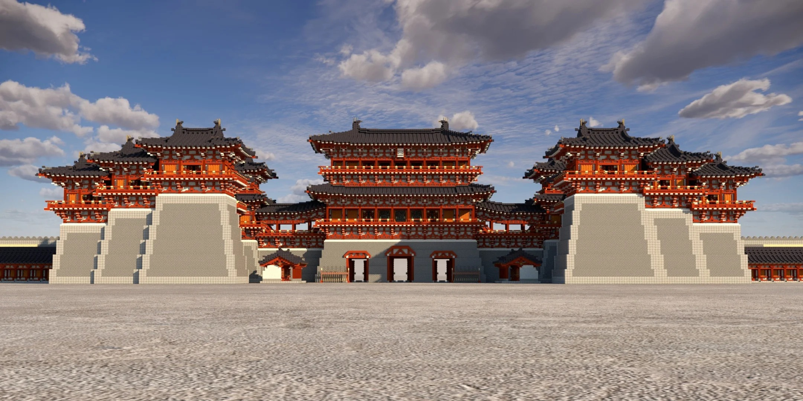
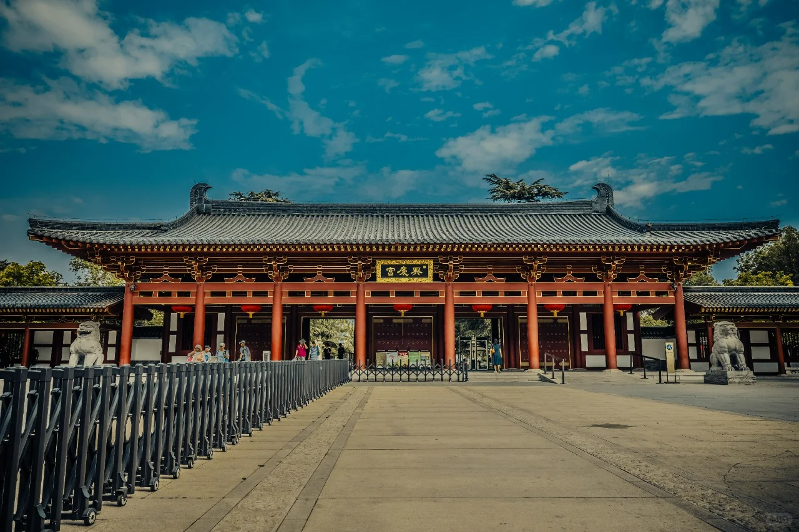
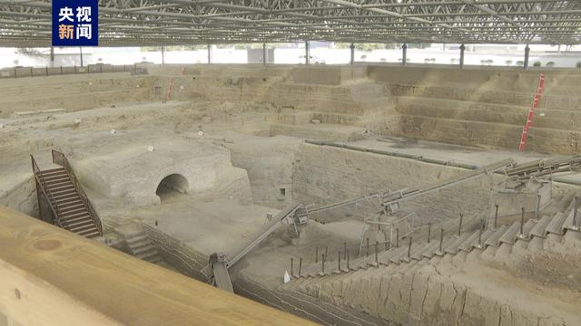

历史背景
唐朝是中国历史上最为强盛、开放和包容的时代之一，其建筑在继承前代的基础上，融合中外元素，形成了规模宏大、气魄雄浑、格调高迈的独特风格。唐代建筑技术成熟，木构架体系完善，都城规划严整，对后世中国建筑乃至东亚建筑圈产生了千年不易的典范影响。
- 都城典范：长安城为当时世界最大都城，棋盘式里坊布局、中轴对称的规划思想臻于极致，成为东亚都城建设的蓝本。
- 木构成熟：木结构技术体系完全定型，斗栱硕大，出檐深远，屋顶舒展，展现出结构力学与艺术造型的完美结合。
- 佛教鼎盛：佛教建筑空前繁荣，寺塔林立，石窟开凿达到高峰，建筑与雕塑、壁画艺术融为一体。
唐朝建筑工程数据可视化
唐朝·建筑类型统计
注：数据基于历史文献记载与考古发现统计，主要反映唐朝建筑活动的总体特征。民居在各类建筑中数量显著领先。
唐朝·建筑材质分析
注：基于唐朝建筑遗存与文献记载分析，木质结构在营造材质中占据主导地位。
唐朝代表性建筑成就
点击任意卡片查看详细信息

大明宫
大明宫是唐代长安城的政治核心与建筑艺术巅峰。它打破了完全对称的布局，顺应龙首原地形，开创了"前朝后苑、因势布局"的新典范。

太极宫
太极宫，即隋代兴建的大兴宫，是唐长安城最初的皇宫和政治中枢。它代表了中国古代都城宫城规划理性化与礼制化的巅峰。

兴庆宫
唐玄宗时期扩建的宫廷园林杰作，以“宫苑一体”格局打破传统宫殿规制，将政务、起居与游赏融于龙池胜景之中，成为盛唐宫廷文化世俗化转型的缩影。

唐代津桥
唐代汴州（今开封）的津桥，是连接大运河（通济渠段）南北两岸、保障漕运与陆路交通顺畅的关键枢纽。